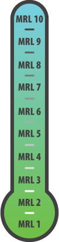

MRLs

MRL 1
Manufacturing Feasibility Assessed
This is the lowest level of manufacturing readiness. The focus is on a high-level assessment of feasibility and of manufacturing shortfalls. Basic manufacturing principles are defined and observed, and basic research is begun in the form of studies to identify producibility and material solutions.
MRL 2
Manufacturing Concepts Defined
This level is characterized by the development of new manufacturing approaches or capabilities. Applied Research translates basic research into solutions for broadly defined military needs. A demonstration of the feasibility for producing a prototype product / component with very little support / data available begins. Typically this level of readiness is associated with Applied Research in the Science & Technology environment and includes identification and study of material and process approaches, including modeling and simulation.
MRL 3
Manufacturing Concepts Developed
The first real demonstrations of the manufacturing concepts now begin. This level of readiness is typical of technologies in the Science & Technology funding categories of 6.2 and 6.3. Within these levels, identification of current manufacturing concepts, or producibility, has occurred and is based on laboratory studies. Materials have been characterized for manufacturability and availability, but further evaluation and demonstration is required. Models that may possess limited functionality have been developed in a lab environment.
MRL 4
Capability to produce the technology in a laboratory environment.
This level of readiness is typical for Science & Technology Programs in the 6.2 and 6.3 Advanced Development categories, and acts as an exit criteria for the Material solution Analysis phase approaching a Milestone A decision. Technologies should have matured to at least TRL 4. This level indicates that the technologies are ready for the Technology Development phase of acquisition. At this point required investments, such as manufacturing technology development, have been identified; processes to ensure manufacturability, producibility and quality are in place; manufacturing risks have been identified for prototype build, and manufacturing cost drivers have been identified. Producibility assessments for design concepts have been completed. Key design performance parameters have been identified as well as any special needs for tooling, facilities, material handling and skills.
MRL 5
Capability to produce prototype components in a production relevant environment.
This level of maturity is typical of the mid-point in the Technology Development phase of acquisition. In the case of key technologies, it is near the mid-point of an ATD program. Technologies should have matured to at least TRL 5. The Industrial Base has been assessed to identify potential manufacturing sources. A manufacturing strategy has been refined and integrated with the Risk Management Plan. Identification of enabling / critical technologies and components is complete. Prototype materials, tooling and test equipment, as well as personnel skills have been demonstrated on components in a production relevant environment, but many manufacturing processes and procedures are still in development. Manufacturing technology development efforts have been initiated, or are ongoing. Producibility assessments of key technologies and components are ongoing. A cost model has been constructed which is based upon a detailed end-to-end value stream map.
MRL 6
Capability to produce a prototype system or subsystem in a production relevant environment.
This MRL is associated with readiness for a MS B decision to initiate an acquisition program by entering into the Engineering & Manufacturing Development phase of acquisition. Technologies should have matured to at least TRL 6. It is normally seen as the level of manufacturing readiness that denotes completion of Science & Technology development and acceptance into a baseline system design. An initial manufacturing approach has been developed. The majority of manufacturing processes have been defined and characterized, but there are still significant engineering and / or design changes. However, preliminary design of critical components has been completed so that producibility assessments of key technologies can be complete. Prototype materials, tooling and test equipment, as well as personnel skills, have been demonstrated on systems and / or subsystems in a production relevant environment. A detailed cost analysis should include design trades and allocated cost targets. Producibility considerations have shaped system development plans. The Industrial Capabilities Assessment (ICA) for MS B has been completed and long lead and key supply chain elements have been identified.
MRL 7
Capability to produce systems, subsystems or components in a production representative environment.
This level of manufacturing readiness is typical for the mid-point of the Engineering & Manufacturing Development Phase leading to the Post-CDR Assessment. Technologies should be maturing to at least TRL 7. System detailed design activity is underway. Material specifications have been approved and materials are available to meet the planned pilot line build schedule. Manufacturing processes and procedures have been demonstrated in a production representative environment. Detailed producibility trade studies and risk assessments are underway. The cost model has been updated with detailed designs, rolled up to system level, and tracked against allocated targets. Unit cost reduction efforts have been prioritized and are underway. Supply chain and supplier quality assurance elements have been assessed, and long lead procurement plans are in place. Production tooling and test equipment design and development have been initiated.
MRL 8
Pilot line capability demonstrated, Low Rate Initial Production begins.
This level is associated with readiness for a MS C decision, and entry into Low Rate Initial Production. Technologies should have matured to at least TRL 7. Detailed system design is essentially complete and sufficiently stable to enter low rate production. All materials are available to meet the planned low rate production schedule. Manufacturing and quality processes and procedures have been proven in a pilot line environment. Processes are under control such that any known producibility risks pose no significant risk for low rate production. There is an Engineering Cost Model driven by the stable detailed design, and this cost model has been validated. The Industrial Capability Assessment for MS C has been completed and shows that the supply chain is established and stable.
MRL 9
Low rate production demonstrated, Capability in place to begin Full Rate Production.
The system, component, or item has been previously produced, is in production, or has successfully achieved low rate initial production. Technologies should have matured to at least TRL 8. This level of readiness is normally associated with readiness for entry into Full Rate Production. During LRIP all systems engineering / design requirements should have been met such that there are minimal system changes. Major system design features are stable and have been proven in test and evaluation. Materials are available to meet planned rate production schedules. Manufacturing processes and procedures are established and controlled in a low rate production environment to three-sigma, or some other appropriate quality level, to meet design key characteristic tolerances. Production risk monitoring is ongoing. LRIP cost targets have been met, with learning curves validated. The cost model has been developed for FRP environment, and reflects the impact of continuous improvement.
MRL 10
Full Rate Production demonstrated and lean production practices in place.
The system, component or item is in full rate production. Technologies should have matured to at least TRL 9. This level of manufacturing is normally associated with the Production or Sustainment phases of the acquisition life cycle. Engineering / design changes are few, and are generally limited to quality and cost improvements. Systems, components or items are in full rate production and meet all engineering, performance, quality and reliability requirements. All materials, manufacturing processes and procedures, inspection and test equipment are in production and controlled to six-sigma or some other appropriate quality level. Rate production unit costs meet goals, and funding is sufficient for production at required rates. Lean practices are well-established, and continuous process improvements are ongoing.